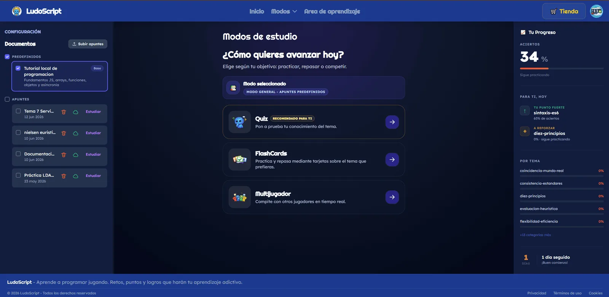
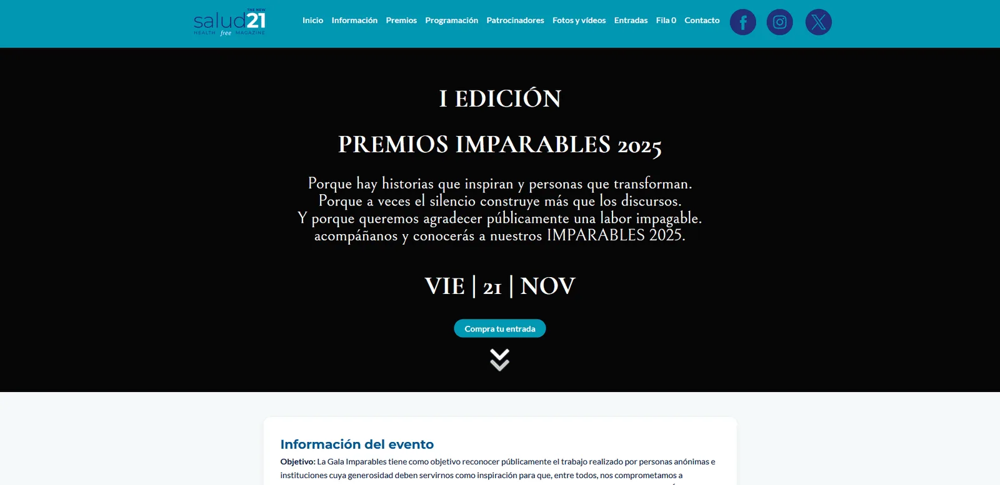

Lo que me molesta dos veces, lo convierto en herramienta.
Soy Álvaro Pastor, desarrollador web e IA. Construyo productos web y herramientas para agentes de código, y en X cuento cómo salen.
- ~1 min → 4 s
- arranque de un entorno de desarrollo
- 6
- agentes de código compatibles con mi buscador
- 20
- skills propias para agentes
- ×5,55
- más rápido al reescribir un lector en Rust
Último lanzamiento · gratis y de código abierto
Agent History Search
Tú te acuerdas. Tu agente, no.
Tu agente busca en vuestras conversaciones pasadas y responde con una fuente que puedes comprobar. Local y de solo lectura.
Claude Code · Codex · OpenCode · Pi · omp · Pi Pocket
Un minuto. Cuatro segundos.
Reorganicé Docker para aprovechar su caché y el entorno de desarrollo de AGE2 dejó de tardar un minuto en arrancar. Estas barras corren en tiempo real.
Antes
Después
Prácticas en AGE2, 2026. El «antes» es aproximado. Trabajo de empresa, sin enlace público.
También hago productos.

Plataforma educativa con IA · beta
LudoScript
Subes tus apuntes y la IA genera la práctica. Cada fallo orienta el siguiente repaso.
Hice el backend: API, datos, IA y multijugador en tiempo real, con respaldo entre modelos para que un fallo no tumbe el servicio.

Primer encargo real · publicada
Gala Imparables
La web de unos premios, con un carrusel que da a cada patrocinador el peso que le toca.
Prototipo navegable
Panel de tickets
Decidir una incidencia de un vistazo: prioridad antes que detalle.
Trabajo profesional
Plantillas para iTop
Siete plantillas de email para que la marca sobreviva a Outlook.
Forma de trabajar
Procesos con IA
Un archivo que acompaña al agente en todos los proyectos.
Nadie me pidió nada de esto.
Tengo 20 skills propias para agentes y utilidades en Rust, Python y PowerShell. Agent History Search salió de aquí. Lo siguiente lo contaré en X.
dom-pickSeñalas un elemento en una web y el agente recibe su selector, HTML, estilos y un recorte.agent-syncUna sola configuración de MCP, sincronizada con cinco agentes distintos.windows-crash-triageDe una ventana cerrada a firma, módulo y pila, sin abrir un depurador.win-dialogInspecciona y pulsa diálogos nativos de Windows desde Rust.config-checkpointsGuarda y restaura estados de la configuración de agentes con git.
Uso personal. Código todavía sin publicar.
También te enseño dónde casi no gano.
×5,55
al volcar una sesión completa tras reescribir mi lector de historial en Rust.
×1,27
en búsqueda de texto, porque ahí manda SQLite. Esa cifra también va en el informe.
Compruebo antes de retirar.
Antes de jubilar la versión en Python, 12 de 12 códigos de salida coincidieron con Rust.
Pruebo lo que publico.
Agent History Search pasa 97 pruebas sin conexión en un clon limpio.
Digo dónde acaba.
Solo lo he probado en Windows, y su página lo dice antes de que lo instales.
Benchmark: 7 repeticiones por caso en una sola máquina. Es una medición concreta, no una verdad universal.
Primero estudié por qué la gente elige algo. Después aprendí a construirlo.
Soy graduado en Marketing y técnico superior en Desarrollo de Aplicaciones Web. Llevo poco más de un año de experiencia profesional, con prácticas incluidas, y trabajo cada día con agentes de código.
Para qué puedes llamarme
- Construir tu web o producto, del diseño al despliegue.
- Meter IA en tu producto con control de fallos y de coste.
- Poner a trabajar agentes de código en tu equipo.
¿Qué te molesta a ti dos veces?
Cuéntamelo. Estoy en Murcia y abierto a trabajo presencial, remoto o híbrido.